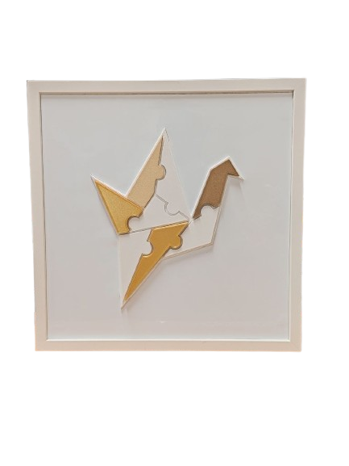
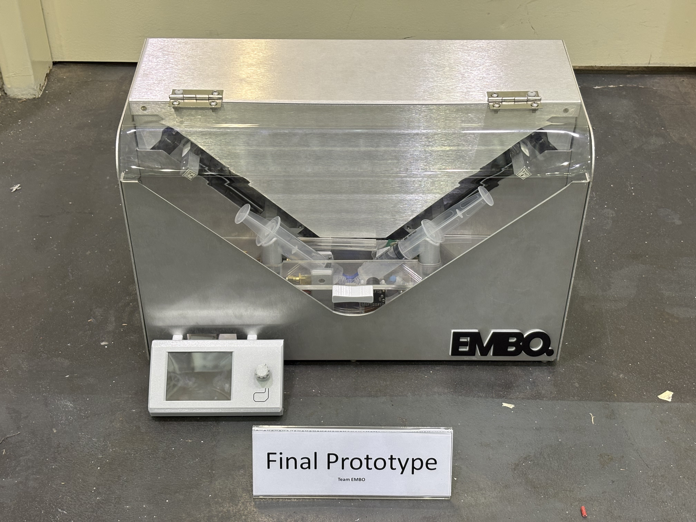
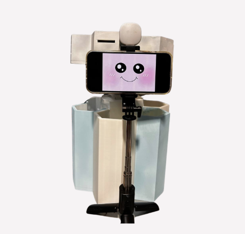

Projects

SAND-E
Remote controlled beach cleaning robot.

Hane Board
Puzzle training system for neurodivergent workers.

EMBO
A medical device prototype that automates the mixing of embolic agents to ensure consistent particle size distribution and viscosity

Hydroponic EC Sensor
A flexible, non-invasive RF sensor that wraps around a pipe to monitor nutrient conductivity in hydroponics.

Trash?CAN!
An automated waste-sorting bin with ESP32-CAM detection and app-based fill monitoring, built to lighten cleaning staff's rounds.